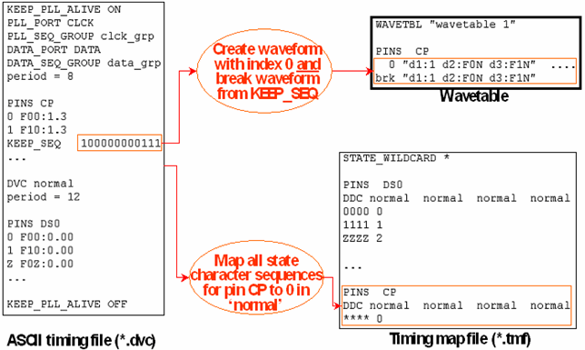

Generating the Wavetable and Timing Map File
The following figure shows how the wavetable for the clock pins and the timing map files of a continuous clock setup are generated:

The timing translation creates a single waveform and an identical break waveform for any clock pin. Within the timing map file, entries for the clock pin are inserted into all the ASCII device cycles for the data pins. These entries map all state character sequences for the clock pin CP to the index of the single waveform for CP in the timing map file. This is achieved by defining the character ‘*' as a wildcard for any state character with the STATE_WILDCARD statement.
Observe that the length of the sequences for the clock pin CP in the timing map file is determined by the x-mode factor, which is 4, and not by the length of the keep sequence.